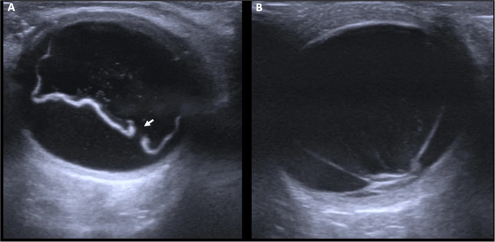
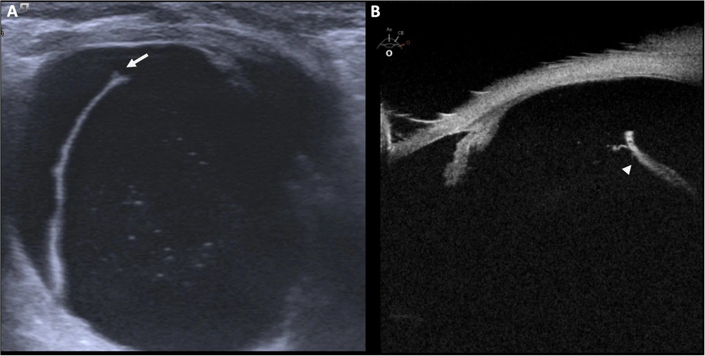
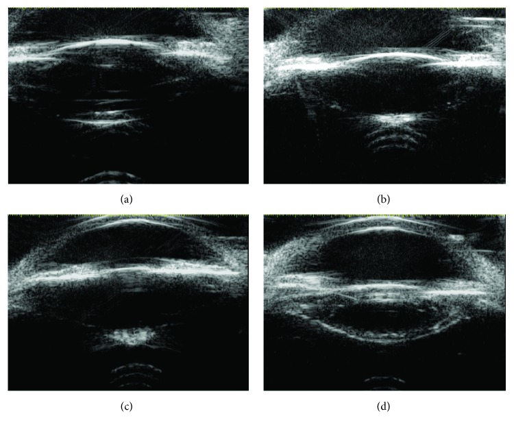
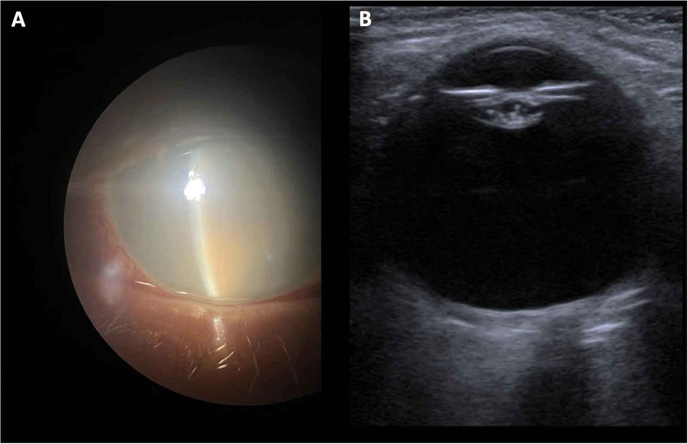
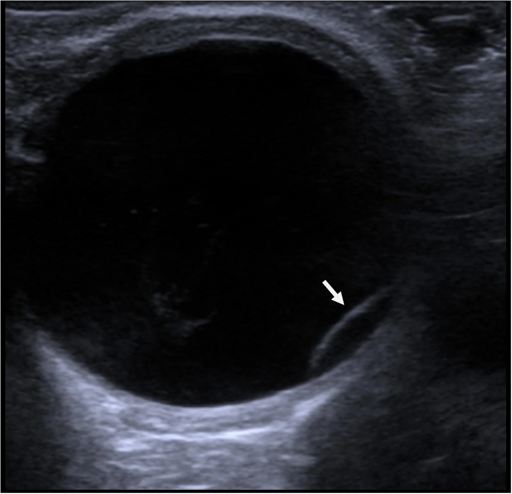
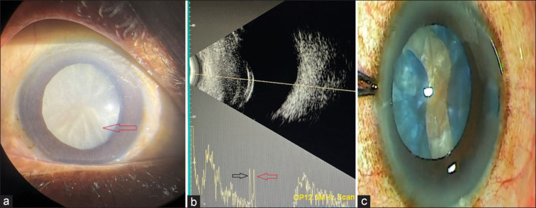

1498 — Siêu âm B-scan trước phẫu thuật đục thể thủy tinh: khi nào phải xem hậu đoạn, khi nào bỏ qua / B-scan before cataract surgery: when the posterior segment must be seen
Tags: pattern:mang-dich-kinh pattern:bong-vong-mac pattern:gia-bong pattern:duc-day pattern:double-peak pattern:khong-thay-day-mat vung:mat vung:hau-doan vung:the-thuy-tinh protocol:sieu-am-B-scan protocol:sieu-am-25MHz protocol:UBM anatomy:hau-doa score:khong incidentaloma:bong-vong-mac-an
Mức chắc chắn (certainty): tổng hợp y văn (literature synthesis) — dựng từ 750 mắt đục thể thủy tinh được B-scan trước mổ (Int J Health Sci (Qassim) 2010, PMC3068804), 9.820 bệnh nhân mổ đục thể thủy tinh ở trại (Indian J Ophthalmol 2023, PMC10391503, CC BY-NC-SA 4.0), 115 mắt đục thể thủy tinh chín không soi được đáy mắt (PLoS One 2022, PMC8803149, CC BY 4.0), 21 mắt đục thể thủy tinh cực sau chụp 25 MHz (J Ophthalmol 2018, PMC5896256, CC BY 4.0), 1 kỹ thuật dấu hai đỉnh (Indian J Ophthalmol 2024, PMC11338405, CC BY-NC-SA 4.0), tổng quan B-scan trong bệnh dịch kính–võng mạc (Eur J Ophthalmol 2026, PMC13672910, CC BY 4.0), 58 mắt xuất huyết dịch kính che đáy mắt (Clin Ophthalmol 2017, PMC5538682), hướng dẫn ESCRS 2024 (J Cataract Refract Surg 2026, PMC13528843, CC BY 4.0) và gộp 8 nghiên cứu / 2.826 mắt cận thị cao (Clin Ophthalmol 2025, PMC12266058). Nhóm không có bệnh nhân của mình; chỗ suy luận ghi [suy luận]. Không ghi tên tác giả — attribution dùng tạp chí + năm + PMCID.
Ranh giới với bài đã có: 411 dạy đọc một ảnh B-scan (bong võng mạc vs xuất huyết dịch kính); 429 trả lời khi không đo được trục nhãn cầu; 1484 lo bong hắc mạc sau mổ. Bài này trả lời câu hỏi tiền phẫu: mắt nào phải B-scan, mắt nào không cần, tìm gì, và kết quả ấy đổi kế hoạch mổ thế nào.
Câu chốt — năm con số phải thuộc: (1) B-scan phát hiện 90/750 (12%) mắt có tổn thương hậu đoạn; nhóm chấn thương 39/71 (55%) so với không chấn thương 51/679 (7,5%) (PMC3068804); (2) trong 9.820 bệnh nhân trại, đánh giá hậu đoạn đổi ngay kế hoạch mổ ở 154 ca (1,57%), can thiệp võng mạc 86 ca (0,88%) (PMC10391503); (3) đục thể thủy tinh chín che đáy mắt ở 100% mắt, và 32,2% (37/115) có bệnh hậu đoạn chỉ phát hiện sau mổ — bệnh ở mắt bên kia là yếu tố dự báo mạnh nhất: OR 47,72 (PMC8803149); (4) B-scan không loại trừ mọi thứ: độ nhạy phát hiện bong võng mạc co kéo chỉ 72,4% (đặc hiệu 96,6%; 88 mắt) (PMC13672910), trong khi với quy trình chuẩn + người làm siêu âm chuyên trách độ nhạy bong võng mạc do rách đạt 100% ở 58 mắt, khớp hoàn toàn 78% (PMC5538682); (5) ESCRS 2024 khuyến cáo GRADE +: dùng siêu âm (A và/hoặc B) khi không nhìn rõ hậu đoạn, như đục thể thủy tinh chín/đậm đặc (PMC13528843).
1. Tổng quan bệnh học – cơ chế hình ảnh
1.1 Vì sao phải là siêu âm: ánh sáng bị chặn, âm thanh thì không
- Đục thể thủy tinh chín/trắng/sậm màu tán xạ và hấp thụ ánh sáng tới mức mất phản xạ đỏ (no red reflex) và không còn đường nhìn tới đáy mắt — đèn khe, soi đáy trực tiếp, chụp đáy mắt và OCT hoàng điểm đều thất bại (OCT còn bị suy giảm tín hiệu do tán xạ, không chỉ "mờ").
- Siêu âm không phụ thuộc độ trong suốt quang học. Đầu dò 10 MHz phát sóng âm xuyên qua giác mạc – thể thủy tinh – dịch kính; hình ảnh sinh ra từ chênh lệch trở kháng âm (acoustic impedance) giữa các mô. Mặt phân cách dịch kính (dịch, trở kháng thấp) – võng mạc/hắc mạc/củng mạc (mô đặc, trở kháng cao) cho hồi âm rất mạnh dù lớp võng mạc chỉ dày ~0,2–0,25 mm — đó là lý do một màng mỏng vẫn "sáng" trên màn hình.
- Tần số đánh đổi lấy độ phân giải: ở 10 MHz, bước sóng trong mô mềm ≈ 0,15 mm (tính từ v = 1.540 m/s), độ phân giải trục thực tế ~0,2 mm, đủ xuyên tới cực sau; ở 20–25 MHz bước sóng ≈ 0,06 mm nhưng độ xuyên kém, chỉ dùng cho cấu trúc sát đầu dò: bao sau thể thủy tinh, thể mi, pars plana; 35–50 MHz (UBM) chỉ dành cho tiền phòng/góc. Đây là lý do vật lý khiến "B-scan 10 MHz bình thường" không nói được gì về một khiếm khuyết bao sau 10–20 µm.
- Vì sao không dùng CT/MRI thay thế: CT cho nhãn cầu đồng nhất ~20–40 HU, chỉ thấy được vôi hóa/dị vật cản quang và hình dạng nhãn cầu; MRI tốt cho khối u, máu, dầu nhưng không phân giải màng võng mạc mỏng và không làm được tại giường, tức thời, không xạ. B-scan là thăm khám 5–10 phút, không xạ, tại phòng khám [suy luận từ bản chất kỹ thuật].
1.2 Bệnh học: mắt đục thể thủy tinh chín KHÔNG phải mắt "chỉ có đục thể thủy tinh"
- Đục thể thủy tinh là bệnh của tuổi và của mắt, không phải bệnh cô lập: cùng một mắt thường có bệnh võng mạc đái tháo đường, thoái hóa cận thị, tắc tĩnh mạch võng mạc, glôcôm, lỗ hoàng điểm, u hắc mạc. Ở 115 mắt đục chín, 32,2% có bệnh hậu đoạn lộ ra sau mổ (drusen 6,1%, thoái hóa cận thị 5,2%, bệnh võng mạc đái tháo đường 4,3%) (PMC8803149).
- Yếu tố dự báo mạnh nhất không phải tuổi mà là MẮT BÊN KIA: bệnh hậu đoạn ở mắt đối diện làm OR 47,72 (p < 0,001) cho bệnh hậu đoạn ở mắt đục chín (PMC8803149). Đây là mẹo lâm sàng miễn phí: soi đáy mắt bên lành trước khi quyết định "không cần B-scan".
- Nhóm nguy cơ cao phải xem hậu đoạn: chấn thương (55% có tổn thương hậu đoạn, PMC3068804), cận thị cao (bong võng mạc 1,97% và rách võng mạc 1,89% sau mổ đục thể thủy tinh; gộp 2.826 mắt, PMC12266058), đái tháo đường có bệnh võng mạc, tiền sử cắt dịch kính/bơm dầu, mắt một bên, đục thể thủy tinh cực sau, và không đo được sinh trắc quang.
1.3 Vì sao B-scan có thể "âm tính giả" — giới hạn vật lý, không phải lỗi người đọc
- Độ phân giải > kích thước tổn thương: lỗ teo võng mạc (atrophic round hole) đường kính < 0,2–0,5 mm không thấy được trên B-scan 10 MHz; ngược lại dialysis võng mạc ở ora serrata (một đoạn bong theo chu vi) thấy được (PMC13672910). Vì vậy câu "B-scan không thấy bong" không đồng nghĩa "không có rách".
- Màng căng, dính, mỏng: trong bong võng mạc co kéo (TRD) trên mắt đái tháo đường có xuất huyết dịch kính, độ nhạy trước mổ chỉ 72,4% (đặc hiệu 96,6%, 88 mắt) — tức 1/4 TRD bị bỏ sót nếu chỉ dựa vào B-scan (PMC13672910). Con số 100% của PMC5538682 đạt được nhờ quy trình quét chuẩn hóa + kỹ thuật viên siêu âm mắt chuyên trách — chứng minh kết quả phụ thuộc quy trình, không phải phụ thuộc máy đắt tiền.
- Bóng lưng của nhân thể thủy tinh đục: nhân đục đậm hấp thụ và phản xạ mạnh → bóng lưng (shadowing) che vùng võng mạc ngay sau nhân. Người đọc thiếu kinh nghiệm kết luận "dịch kính trong" trong khi thực chất không nhìn thấy gì — đây là bẫy "không thấy = không có" kinh điển [suy luận].
2. Mẫu hình + chẩn đoán phân biệt theo vị trí (gamut)
Mẫu hình trung tâm: một màng hồi âm cao trong khoang dịch kính, trên mắt không soi được đáy mắt — câu hỏi luôn là màng ấy dính vào đâu, dày bao nhiêu, có di động không.
- Màng dính ĐĨA THỊ + ora serrata, gấp nếp (corrugated), di động theo mắt → bong võng mạc do rách (rhegmatogenous RD).
- Màng căng, phẳng, KHÔNG gấp nếp, rất ít di động, dính vào các "chốt" xơ mạch → bong võng mạc co kéo (tractional RD) — bệnh cảnh đái tháo đường tăng sinh/xuất huyết dịch kính.
- Vòm dày, nhẵn, nhiều múi, KHÔNG đi qua đĩa thị, giới hạn ở trung ngoại vi (nơi hắc mạc dính chắc ở tĩnh mạch vortex) → bong hắc mạc / xuất huyết dưới hắc mạc (bài 1484).
- Vòm MỎNG, nhẵn, hình vòm, hầu như không di động, không xẹp khi ấn củng mạc → retinoschisis (giả bong võng mạc).
- Chấm hồi âm rời rạc, đồng nhất, di động, có "khoảng trống" sáng giữa khối và võng mạc, lấp lánh khi quét động → thoái hóa dạng sao (asteroid hyalosis) — không phải viêm/máu.
- Đám hồi âm màng/ổ trong dịch kính + dày hắc mạc ở mắt đỏ đau sau mổ → viêm dịch kính/viêm nội nhãn; không có viêm dịch kính trên mắt thể thủy tinh quá chín phù phép (phacolytic) giúp loại trừ viêm nội nhãn (PMC13672910).
- Cấu trúc hồi âm cao, bờ tròn, nằm trong dịch kính hoặc tiền phòng, có bóng lưng → nhân/tinh thể bị rơi (dropped nucleus), IOL lệch, hoặc dị vật nội nhãn (IOFB) — sau chấn thương/bục nhãn cầu.
- Khối đặc trong nhãn cầu ± vôi hóa, có mạch trên Doppler → u hắc mạc (melanoma), u nguyên bào võng mạc (retinoblastoma) ở trẻ.
- Nhãn cầu méo, lồi ra sau (posterior staphyloma) hoặc khuyết củng mạc/hắc mạc (coloboma) → thay đổi giải phẫu, ảnh hưởng công suất IOL và tiên lượng.
- Thể thủy tinh: hai đỉnh hồi âm sát nhau 80–90% trên A-scan chồng B-scan → vỏ hóa lỏng sau nhân (nguy cơ tăng áp lực nội thể thủy tinh, capsulorhexis xé rộng — "cờ Argentina"); một đỉnh → không hóa lỏng phía sau (PMC11338405). Bao sau đứt chỉ thấy được bằng 25 MHz (mục 4.3).
3. Bảng so sánh phân biệt (ma trận đối chiếu)
| Thực thể (entity) | Hình ảnh điển hình | Chốt vào (rule-in) | Chốt loại (rule-out) | Gợi ý xác nhận |
|---|---|---|---|---|
| Bong võng mạc do rách (RRD) | Màng hồi âm cao gấp nếp, dính đĩa thị + ora, di động theo mắt, có thể thấy lỗ/rách trong màng | Dính đĩa thị + gấp nếp + di động; hoàng điểm on/off ghi rõ | Vòm dày nhẵn không qua đĩa → bong hắc mạc; vòm mỏng không gấp nếp → schisis | Soi đáy khi mổ; mổ trong 24–48 giờ nếu hoàng điểm còn áp (bài 411) |
| Bong võng mạc co kéo (TRD) | Màng căng, phẳng/table-top, dính vào chốt xơ mạch, ít di động, kèm xuất huyết dịch kính | Màng căng + chốt dính + đái tháo đường tăng sinh | Gấp nếp + dính đĩa + di động → RRD | Cảnh báo: độ nhạy B-scan chỉ 72,4% (PMC13672910) — nghi cao thì vẫn phải mổ thăm dò |
| Bong hắc mạc / xuất huyết dưới hắc mạc | Vòm dày, nhiều múi, bờ nhẵn, dừng ở trung ngoại vi, T-sign; hồi âm trong trống (dịch) hoặc dày không đều (máu) | Vòm dày + không qua đĩa + sau mổ/hạ nhãn áp | Qua đĩa thị, gấp nếp → võng mạc | Theo dõi chuỗi B-scan; "kissing choroidals" → can thiệp (bài 1484) |
| Retinoschisis (giả bong) | Vòm mỏng, nhẵn, hình vòm, không gấp nếp, không xẹp khi ấn củng mạc | Mỏng + nhẵn + không di động + không xẹp khi ấn | Dày, gấp nếp, xẹp một phần khi ấn → RRD | UBM: tách lớp 72%, trụ nội võng mạc 64%, nang 36%; không có ở mắt bong thật (PMC13672910) |
| Dialysis võng mạc ở ora | Bong hình liềm sát ora serrata, phần sau của màng dính vitreous base | Bong sát ora + không PVD | Bong lan tới hậu cực → RRD thông thường | UBM xác nhận điểm tách; đây là tổn thương thấy được khác với lỗ teo nhỏ |
| Thoái hóa dạng sao (asteroid hyalosis) | Hạt hồi âm rời rạc, đồng nhất, di động, khoảng trống sáng giữa khối và võng mạc, lấp lánh khi quét động | Hạt rời + khoảng trống sau + lấp lánh | Đám màng dày, dính, có dày hắc mạc → viêm dịch kính | Không cần điều trị; đừng chẩn đoán viêm nội nhãn (PMC13672910) |
| Viêm dịch kính / viêm nội nhãn | Đám hồi âm màng (70%) hoặc ổ (36%) trong dịch kính, dày hắc mạc 16,7%, dịch dưới Tenon 13% | Màng/ổ trong dịch kính + dày hắc mạc + mắt đỏ đau sau mổ | Hạt rời rạc + khoảng trống → asteroid hyalosis | Chọc dịch kính cấy; B-scan trước và sau tiêm (bong võng mạc gặp 8% viêm nội nhãn) |
| Thể thủy tinh quá chín + phù phép (phacolytic) | Đục dày toàn bộ, tiền phòng đục như sữa, B-scan không có viêm dịch kính, có thể lệch thể thủy tinh | Dịch tiền phòng đục + thể thủy tinh dày + KHÔNG viêm dịch kính | Có màng/ổ trong dịch kính → viêm nội nhãn | Loại trừ viêm nội nhãn trước khi mổ; chuẩn bị yếu dây chằng zinn (PMC13672910, Fig. 14) |
| Rơi nhân / IOL lệch / dị vật | Cấu trúc bờ tròn hồi âm cao trong dịch kính/tiền phòng, bóng lưng; IOL nghiêng thấy khi nằm ngửa | Tiền sử chấn thương/mổ phức tạp + cấu trúc lạ | Không có cấu trúc lạ → không phải | CT nếu nghi kim loại; B-scan trước khi quyết định mổ |
| U trong nhãn cầu | Khối đặc ± vôi hóa (trẻ), ± mạch trên Doppler (người lớn) | Khối đặc + vôi hóa ở trẻ < 5 tuổi hoặc mạch trong khối | Máu tụ/màng không có mạch → không phải u | MRI (u hắc mạc), CT (vôi hóa); không chọc khi nghi u |

*(A) Bong võng mạc do rách — màng gấp nếp (corrugated), dính đĩa thị, tình cờ phát hiện trên mắt đục thể thủy tinh sậm màu (brunescent); lát cắt ngang 12 giờ thấy lỗ rách nguyên nhân (mũi tên). (B) Mắt đái tháo đường có xuất huyết dịch kính: bong võng mạc co kéo kiểu "mặt bàn" (table-top) — màng căng, phẳng, không gấp nếp. Cùng là "màng trong dịch kính", hai kế hoạch mổ khác hẳn. Nguồn: Eur J Ophthalmol 2026, PMC13672910, Fig. 6, CC BY 4.0 (nguyên bản, chuyển định dạng webp→jpg).*
(A) Dialysis võng mạc — võng mạc tách khỏi ora serrata (mũi tên) và bong ra phía sau; không thấy PVD. (B) UBM xác nhận điểm tách ở ora (đầu mũi tên). Điểm cần nhớ: dialysis thấy được, còn lỗ teo nhỏ thì không — nên "B-scan sạch" không loại trừ rách nhỏ. Nguồn: Eur J Ophthalmol 2026, PMC13672910, Fig. 11, CC BY 4.0.4. Protocol chụp – đọc – quyết định + ngưỡng xử trí
4.1 Ai cần B-scan tiền phẫu (chỉ định)
- Bắt buộc (không soi được đáy mắt): đục thể thủy tinh chín/trắng/sậm màu, mất phản xạ đỏ, không thấy đĩa thị và hoàng điểm bằng đèn khe + kính 90D hoặc soi đáy gián tiếp. ESCRS 2024: siêu âm (A và/hoặc B) khi không nhìn rõ hậu đoạn, đặc biệt đục thể thủy tinh chín/đậm đặc khi sinh trắc quang không làm được (GRADE +) (PMC13528843).
- Chỉ định theo nguy cơ (dù còn nhìn một phần): chấn thương (55% có tổn thương hậu đoạn, PMC3068804), cận thị cao (bong 1,97%, rách 1,89% sau mổ, PMC12266058), đái tháo đường có bệnh võng mạc, tiền sử cắt dịch kính/bơm dầu/bơm khí, tiền sử bong võng mạc mắt bên kia, mắt một bên, đục thể thủy tinh cực sau (xem 4.3), không giải thích được thị lực kém bằng độ đục.
- Có thể bỏ qua: đục thể thủy tinh nhẹ–trung bình còn soi rõ đĩa thị và hoàng điểm bằng 90D/soi đáy gián tiếp có ấn củng mạc, sinh trắc quang đo được, không có yếu tố nguy cơ — B-scan thêm không đổi kế hoạch mà chỉ tăng thời gian/chi phí [suy luận; phù hợp thực hành "chỉ B-scan khi không thấy đáy mắt" của PMC10391503].
- Không thay thế được: B-scan không thay soi đáy mắt sau mổ và không thay OCT hoàng điểm khi trục quang đã trong; tổn thương 32,2% ở mắt đục chín chỉ lộ ra sau mổ (PMC8803149).
4.2 Kỹ thuật 10 MHz — 6 bước, có số
- Đầu dò 10 MHz, gel + mi nhắm (hoặc mở mi có đệm); KHÔNG ấn khi nghi vỡ nhãn cầu (nguy cơ bục thêm) — dùng kỹ thuật đặt nhẹ/qua mi.
- Ba hướng cắt: axial (qua đĩa thị — dùng để đo khoảng cách và so hoàng điểm), transverse (vuông góc kinh tuyến), longitudinal (song song kinh tuyến) — mỗi mắt ≥ 6 hướng, đánh dấu vị trí trên ảnh (PMC13672910, Fig. 1).
- Quét động (dynamic): bảo bệnh nhân đảo mắt rồi giữ yên — phân biệt màng cứng/ít di động (võng mạc) với hạt di động (máu/asteroid) và màng trôi (hyaloid).
- Tăng gain có kiểm soát khi nhân đục gây bóng lưng: dịch chuyển đầu dò lệch trục để nhìn võng mạc quanh bóng nhân, không chỉ tăng gain (tăng gain làm "đầy" dịch kính bằng nhiễu giả).
- Ghi rõ 4 câu trả lời bắt buộc trong phiếu: (a) có màng không? (b) dính đĩa thị không? (c) có gấp nếp/table-top không? (d) hoàng điểm còn áp hay đã bong? — thiếu (d) là thiếu dữ liệu để hẹn mổ.
- Luôn quét mắt bên kia nếu chưa soi được: bệnh hậu đoạn mắt đối diện OR 47,72 cho bệnh hậu đoạn mắt đục chín (PMC8803149).
4.3 Khi câu hỏi là BAO SAU thể thủy tinh — phải lên 25 MHz
- 10 MHz không đủ phân giải bao sau (~10–20 µm); 25 MHz (đầu dò chuyên dụng) thấy đường cong bao sau liên tục và khiếm khuyết bao sau ở đục thể thủy tinh cực sau (posterior polar cataract, PPC) (PMC5896256).
- Số liệu thực: 21 mắt PPC — trước mổ 25 MHz đọc 19 bao sau nguyên / 2 hở; trong mổ 17 nguyên / 4 rách bao sau (PCR); 2 ca PCR bị bỏ sót là các ca có hồi âm cao giữa đục cực sau và bao sau (chỉ điểm dính (synechia) PPC–bao sau) (PMC5896256). Kết luận trung thực: 25 MHz giúp lập kế hoạch nhưng không loại trừ PCR — độ nhạy cho PCR trong loạt này chỉ 2/4 = 50%.
- Hệ quả kế hoạch: có hở bao sau → không thủy phân tách nhân mạnh, hạ thấp thông số phaco, chuẩn bị sẵn van nhớt (viscoelastic) và màng bao; không đặt IOL vào bao nếu bao mất liên tục lớn.
4.4 Dấu "hai đỉnh" (double peak sign) — đọc áp lực nội thể thủy tinh trước mổ
- Bật A-scan chồng trên B-scan, quét trục qua thể thủy tinh, nhìn đỉnh hồi âm của bao sau rồi tìm đỉnh thứ hai sát ngay (bờ sau nhân) — hai đỉnh cùng biên độ 80–90%, vùng trống giữa hai đỉnh = vỏ hóa lỏng (PMC11338405).
- Ý nghĩa: vỏ hóa lỏng sau nhân → tăng áp lực nội thể thủy tinh → khi mở bao, dịch phụt ra và capsulorhexis xé rộng tới xích đạo → dấu cờ Argentina, nguy cơ rách bao sau. Có hai đỉnh → chuẩn bị: chọc hút dịch trước, van nhớt, mở bao bằng kim nhỏ hoặc capsulotomy chủ động [suy luận từ cơ chế trong bài gốc; bài gốc nêu kinh nghiệm cá nhân, không có cỡ mẫu].
- Một đỉnh → vỏ sau không hóa lỏng → nguy cơ thấp hơn (cùng nguồn).
4.5 Quyết định sau B-scan — ngưỡng và hành động
| Kết quả B-scan | Hành động | Thời gian |
|---|---|---|
| RRD hoàng điểm còn áp | Mổ bong võng mạc cấp ± phaco cùng thì | 24–48 giờ (bài 411) |
| RRD hoàng điểm đã bong | Mổ sớm, tư vấn tiên lượng thị lực kém hơn | trong vài ngày |
| TRD | Cắt dịch kính ± bóc màng; nếu phaco cùng thì cân nhắc mở bao sau thì đầu (bài 1492: PCO 4,4% vs 28,2%) | theo lịch mổ |
| Bong hắc mạc/xuất huyết dưới hắc mạc | Hoãn phaco, xử lý hắc mạc trước (bài 1484) | tùy mức độ |
| Xuất huyết dịch kính KHÔNG bong | Có thể phaco; tư vấn không thấy rõ đáy mắt sau mổ; cân nhắc siêu âm lại nếu đục thêm | theo lịch |
| Nghi u / dị vật / rơi nhân | Ngừng phaco, chuyển CT/MRI hoặc hội chẩn võng mạc | ngay |
| Chỉ asteroid hyalosis | Tiến hành phaco bình thường | theo lịch |
| Không thấy gì (nhưng bóng nhân) | Ghi rõ "hạn chế do bóng nhân", không ghi "bình thường" | — |
flowchart TD
A[Chỉ định mổ đục thể thủy tinh] --> B{Soi đáy mắt 90D / gián tiếp có ấn củng mạc: thấy đĩa thị + hoàng điểm?}
B -->|Có| C{Có yếu tố nguy cơ? chấn thương, cận thị cao, ĐTĐ, tiền sử PPV, mắt một bên, PPC}
C -->|Không| D[Không cần B-scan thường quy: mổ theo kế hoạch, soi đáy lại sau mổ]
C -->|Có| E[B-scan 10 MHz có mục tiêu: màng, dính đĩa, gấp nếp, hoàng điểm on/off]
B -->|Không| E
E --> F{Kết quả}
F -->|Màng gấp nếp dính đĩa| G[Bong võng mạc do rách: mổ 24-48 giờ nếu hoàng điểm còn áp, cân nhắc phaco cùng thì]
F -->|Màng căng table-top, ĐTĐ| H[Bong co kéo: cắt dịch kính bóc màng; B-scan có thể âm tính giả]
F -->|Vòm dày không qua đĩa| I[Bong hắc mạc: xử lý trước, hoãn phaco]
F -->|Vòm mỏng nhẵn không di động| J[Retinoschisis: không mổ võng mạc, tiếp tục phaco]
F -->|Hạt rời rạc khoảng trống sau| K[Asteroid hyalosis: phaco bình thường]
F -->|Khối đặc, dị vật, rơi nhân| L[Dừng phaco: CT/MRI, hội chẩn võng mạc]
F -->|Không thấy rõ vì bóng nhân| M[Ghi hạn chế, quét lệch trục và tăng gain có kiểm soát, hẹn soi đáy sau mổ]
E --> N{Câu hỏi là bao sau thể thủy tinh?}
N -->|Có| O[25 MHz B-scan: đường cong bao sau liên tục hay hở; ghi nhận giới hạn 50% độ nhạy PCR]

(a) Đường cong bao sau liên tục (CPCC) bình thường, hồi âm giữa bao sau và đục cực sau rất ít. (b) CPCC bình thường nhưng hồi âm cao giữa PPC và bao sau — chỉ điểm dính, đây là 2 ca PCR bị bỏ sót trong loạt 21 mắt. (c) Bao sau hở: hồi âm lồi vào dịch kính. (d) Đục dưới bao sau có bao sau nguyên. Nguồn: J Ophthalmol 2018, PMC5896256, Fig. 1, CC BY 4.0.5. Biến thể bình thường và cạm bẫy
- Cạm bẫy 1 — "B-scan bình thường" vì bóng lưng của nhân đục. Nhân đục đậm tạo bóng sau; vùng tối đó không phải dịch kính trong. Cách tránh: quét lệch trục để thấy võng mạc quanh bóng, tăng gain có kiểm soát, và ghi rõ hạn chế thay vì kết luận âm tính.
- Cạm bẫy 2 — asteroid hyalosis bị đọc thành viêm nội nhãn/viêm dịch kính. Khác biệt: hạt rời rạc, đồng nhất, có khoảng trống sáng sát võng mạc, lấp lánh khi quét động; viêm cho màng/ổ dính, dày hắc mạc. Gọi nhầm → chọc dịch kính và tiêm kháng sinh không cần (PMC13672910).
- Cạm bẫy 3 — retinoschisis bị đọc thành bong võng mạc. Schisis mỏng, nhẵn, không gấp nếp, không xẹp khi ấn củng mạc; bong thật dày, gấp nếp, xẹp một phần. Gọi nhầm → mổ võng mạc oan. UBM giúp: tách lớp 72%, trụ 64%, nang 36% (PMC13672910).
- Cạm bẫy 4 — bong hắc mạc bị đọc thành bong võng mạc. Vòm dày, nhiều múi, không qua đĩa thị, dừng ở trung ngoại vi; T-sign. Điều trị khác hẳn (bài 1484).
- Cạm bẫy 5 — tin tuyệt đối "B-scan không có bong". Lỗ teo < 0,2–0,5 mm không thấy; TRD độ nhạy 72,4%; PCR trên PPC bỏ sót 2/4 dù dùng 25 MHz. Trong nhóm nguy cơ cao, âm tính không loại trừ.
- Cạm bẫy 6 — bỏ qua mắt bên kia. Bệnh hậu đoạn mắt đối diện OR 47,72 — nếu mắt bên kia có bệnh võng mạc đái tháo đường/bong/thoái hóa, hạ ngưỡng chỉ định B-scan (PMC8803149).
- Cạm bẫy 7 — mắt có dầu silicone/bơm khí. Dầu silicone cho hồi âm mạnh + đa hồi âm (reverberation) và sai lệch trục đo; bơm khí cho đường cong giả bong (bài 1490, 1416). Đọc "bong" trên mắt bơm dầu/bơm khí phải đối chiếu tư thế và khám khi môi trường trong lại.
- Cạm bẫy 8 — "thỏa mãn tìm kiếm" (satisfaction of search). Tìm ra bong võng mạc rồi quên tìm dị vật, u, rơi nhân, khuyết củng mạc — nhất là mắt chấn thương, nơi 55% có tổn thương hậu đoạn và có thể nhiều tổn thương cùng lúc.
- Cạm bẫy 9 — coi B-scan là "khám đáy mắt thay thế". Ở mắt đục chín, 32,2% bệnh hậu đoạn chỉ lộ ra sau mổ (11,8 ± 13,9 ngày) — phải hẹn soi đáy sau mổ và tư vấn trước.
- Biến thể bình thường: màng hyaloid trước mỏng, trôi nhẹ (không dính đĩa), dịch kính hóa lỏng ở người lớn tuổi, bờ trong của củng mạc sau (hồi âm kép ở cực sau) — không gọi bong. Bờ thể mi/pars plana trên lát cắt rất trước dễ tạo vòm giả; luôn quét qua đĩa thị trước.
6. Tự lượng giá — Blind Quiz
Ca 1 — Nam 72 tuổi, thể thủy tinh trắng đục hoàn toàn, tiền phòng đục như sữa, nhãn áp 34 mmHg, đau nhẹ. Trước mổ, B-scan được chỉ định.

- Câu hỏi: Ảnh (A) và (B) cho biết gì? Có cần tiêm kháng sinh nội nhãn vì nghi viêm nội nhãn không? Kế hoạch mổ?
Bấm để hiện đáp án (findings + chẩn đoán)
- (A) Tiền phòng đục như sữa do rò protein thể thủy tinh ở thể thủy tinh quá chín — bệnh cảnh glôcôm phù phép (phacolytic glaucoma). (B) B-scan: thể thủy tinh dày, đục, và KHÔNG có viêm dịch kính — đây là dữ kiện loại trừ viêm nội nhãn trước khi mổ (PMC13672910, Fig. 14).
- Không tiêm kháng sinh nội nhãn: hình ảnh không có màng/ổ viêm trong dịch kính, bạch cầu tiền phòng là do phản ứng với protein thể thủy tinh, không phải nhiễm khuẩn. Tiêm kháng sinh khi không có nhiễm là dùng thuốc sai và làm mờ đánh giá sau mổ.
- Kế hoạch: phaco + kiểm soát áp lực nội thể thủy tinh (thể thủy tinh căng, dây chằng zinn có thể yếu) — cân nhắc van nhớt, mở bao có kiểm soát, và theo dõi nhãn áp; nếu B-scan thấy lệch thể thủy tinh → chuẩn bị phương án khác (mục 2, hàng "thể thủy tinh quá chín").
- Nguồn: Eur J Ophthalmol 2026, PMC13672910, Fig. 14, CC BY 4.0.
Ca 2 — Nữ 65 tuổi, đục thể thủy tinh sậm màu, không soi được đáy mắt, không triệu chứng. B-scan (lát cắt ngang 5 giờ) cho hình dưới.

- Câu hỏi: Mô tả vòm hồi âm. Đây có phải bong võng mạc? Dấu hiệu nào phân biệt? Thái độ xử trí?
Bấm để hiện đáp án
- Vòm mỏng, nhẵn, hình vòm, không gấp nếp, hồi âm yếu và đều, không xẹp khi ấn củng mạc → retinoschisis, không phải bong võng mạc (PMC13672910, Fig. 10).
- Phân biệt: bong võng mạc dày hơn, gấp nếp, di động, xẹp một phần khi ấn củng mạc; schisis tách lớp — UBM thấy tách lớp 72%, trụ nội võng mạc 64%, nang 36%, không có ở mắt bong thật.
- Xử trí: tiếp tục phaco theo kế hoạch, không mổ võng mạc; soi đáy lại sau mổ và theo dõi vì schisis có thể tiến triển — nhưng mổ võng mạc dự phòng là sai.
- Nguồn: Eur J Ophthalmol 2026, PMC13672910, Fig. 10, CC BY 4.0.
Ca 3 — Nam 68 tuổi, thể thủy tinh chín trắng, bật A-scan chồng B-scan khi quét trục: hai đỉnh hồi âm cao sát nhau, biên độ tương đương. Trong mổ, khi rạch bao trước, dịch trắng phụt ra và vết rách lan ra hai bên.

- Câu hỏi: Hai đỉnh ấy là gì? Vì sao vết rạch lan? Có thể dự báo trước bằng cách nào?
Bấm để hiện đáp án
- (a) Thể thủy tinh chín có túi dịch dưới bao trước (mũi tên đỏ). (b) A-scan chồng B-scan: hai đỉnh 80–90% — một của bao sau, một của bờ sau nhân, vùng trống giữa hai đỉnh là vỏ hóa lỏng. (c) Dấu cờ Argentina — capsulorhexis xé rộng do áp lực nội thể thủy tinh cao (PMC11338405, Fig. 1).
- Dự báo trước: có dấu hai đỉnh → chuẩn bị hút dịch trước khi mở bao, van nhớt, mở bao nhỏ, có kiểm soát; một đỉnh → nguy cơ thấp hơn. Bài gốc là kinh nghiệm kỹ thuật, không có cỡ mẫu/đối chứng — dùng như dấu gợi ý, không phải tiêu chuẩn tuyệt đối.
- Nguồn: Indian J Ophthalmol 2024, PMC11338405, Fig. 1, CC BY-NC-SA 4.0 (nguyên bản, phi thương mại).
Bài liên quan chéo
- 400 – Tổng quan Mắt & thị giác
- 411 – Siêu âm nhãn cầu: bong võng mạc vs xuất huyết dịch kính (đọc ảnh B-scan cơ bản)
- 429 – Đo trục nhãn cầu bằng MRI/CT khi sinh trắc quang thất bại (khi B-scan/A-scan cũng không đo được)
- 449 – Chấn thương mắt và dị vật (dị vật nội nhãn trên B-scan/CT)
- 1484 – Bong hắc mạc thanh dịch & xuất huyết dưới hắc mạc sau mổ mắt (giả bong võng mạc)
- 1480 – Đục thể thủy tinh sau bóc màng ERM: một thì hay hai thì (khi đã biết trước bệnh hậu đoạn)
- 1487 – Bong võng mạc giả thể thủy tinh
- 1490 – Sinh trắc & công suất IOL ở mắt bơm khí (B-scan qua khí: giả bong)
- 1492 – Đục bao sau nhân tạo (PCO) sau phacovitrectomy (mở bao sau thì đầu khi mổ phối hợp)
- 1416 – Glôcôm do dầu silicone (dầu silicone: hồi âm giả, sai trục)
- 1496 – Tắc lệ đạo sau chấn thương và mổ xoang
Không dùng để chẩn đoán độc lập khi chưa có người hướng dẫn.